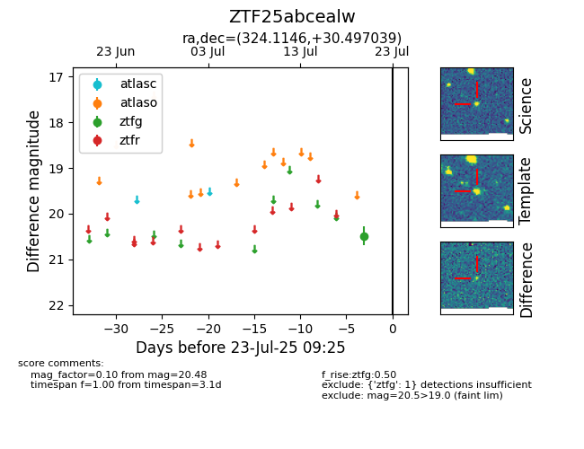

Target ZTF25abcealw at 2025-07-23 12:37, see:
FINK: fink-portal.org/ZTF25abcealw
Lasair: lasair-ztf.lsst.ac.uk/objects/ZTF25abcealw
ALeRCE: alerce.online/object/ZTF25abcealw
alt names
ZTF25abcealw (ztf,fink)
coordinates:
equatorial (ra, dec) = (324.1146,+30.49704)
galactic (l, b) = (80.5858,-15.91853)
photometry
last ztfg=20.48
1 ztfg detections
